单细胞转录组+亚细胞空间代谢组=25分文章
原文：https://mp.weixin.qq.com/s?__biz=MzAwMzIzOTk5OQ==&mid=2247496126&idx=1&sn=8cb6040a38eb844bb215c0d395196e3a&chksm=9b3c88eeac4b01f8dcb8f4c7a19c5a58841d5fe1623f0a4c585c6dcc281cbbdd2830a1150f6a#rd 合集：单细胞教程全收录 / 文献速递
写在前面
今天要介绍的文献是2022年11月初发表于 Cell Stem Cell 的一篇文章，该文8月份投稿至该杂志，评审、返修与最终发表共计耗时3个月 ，可谓神速。这篇文献的题目是 Spatial dynamic metabolomics identifies metabolic cell fate trajectories in human kidney differentiation，通讯作者是荷兰莱登大学 医学中心的 Ton J. Rabelink 教授。该文使用了单细胞转录组 、亚细胞层级的空间代谢组 + 免疫荧光的方法，通过荧光和空代的共定位分析了胎儿肾组织和肾类器官发育轨迹上的特征脂质分子，并结合转录层面和代谢层面的证据，证明肾脏类器官能量代谢的碳源主要来自短链脂肪酸 而非长链脂肪酸。
注：笔者将按照自己的叙述逻辑解读该文献，下面出现的图片将不会严格按照原文顺序，故请读者诸君通读该文后再继续往下阅读。
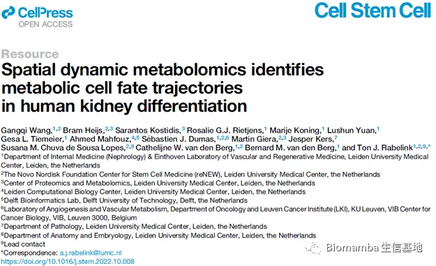
通讯作者简介
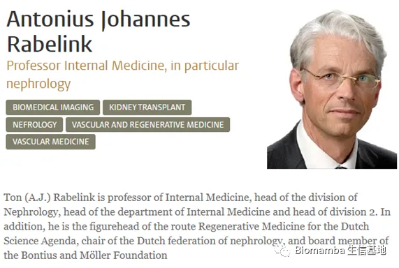
__肾细胞分化过程中代谢基因的变化
作者首先使用单细胞转录组测序鉴定了妊娠13周、16周与18周人类胎儿肾脏 样本的细胞类型，共分出22种细胞，基本涵盖了从肾颗粒、S型体到成熟的各阶段。
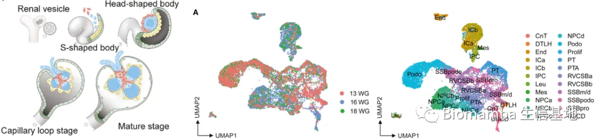
然后，基于REACTOME数据库收录的代谢相关基因集合，作者对单细胞数据重新降维聚类，发现对于不同类型的细胞，其代谢基因具有独特的表达模式。作者随后使用monocle3 绘制分化轨迹，能够清晰地看到从肾始祖细胞（Nephron Progenitor Cell, NPC）出发，经前小管集合 (pre-tubular aggregate, PTA)、肾颗粒/逗型体细胞(renal vesicle/comma-shaped body cell, RVCSB)到足细胞（podocytes）、(proximal tubules, PT)、输尿管与收集管细胞 (ureteric bud and collecting duct cell, UBCD)的发育轨迹分支。这说明代谢相关基因可能与肾脏分化高度相关。拟时序评分与通路富集评分的相关性分析 则指出，脂质重塑相关通路的激活与PT、DT和足细胞等表皮细胞的分化具有紧密的联系。
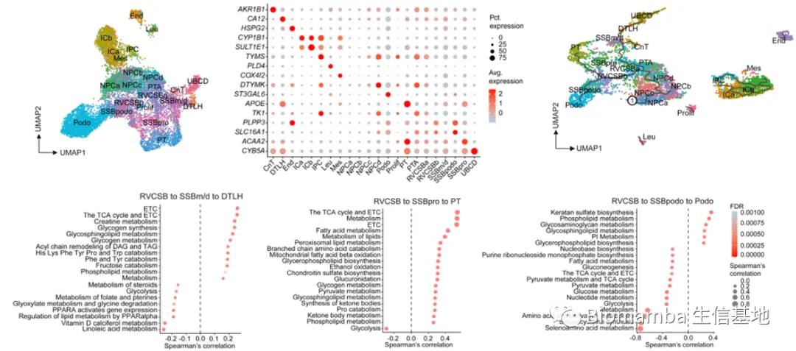
肾细胞分化过程中的脂质特征
为探索不同发育时期的脂质特征，作者首先使用免疫荧光标记了三种随发育变化的蛋白，通过共定位和组织切片研读，确定了不同细胞类型的空间分布情况。然后，使用MALDI-MSI平台检测组织切片的代谢物分布情况。作者随后将免疫荧光的结果与MALDI-MSI产生的代谢物空间信息进行匹配与重叠，将代谢物的空间分布与细胞类型结合，得到了16种细胞类型的特征分子，并进行UMAP降维聚类。从这些这些结果出发，作者发现这些细胞的特征分子基本都属于脂质类分子 （磷酸甘油酯、磷脂酰乙醇胺等），而这些分子的组织分布基本也反映了细胞类型的空间分布。
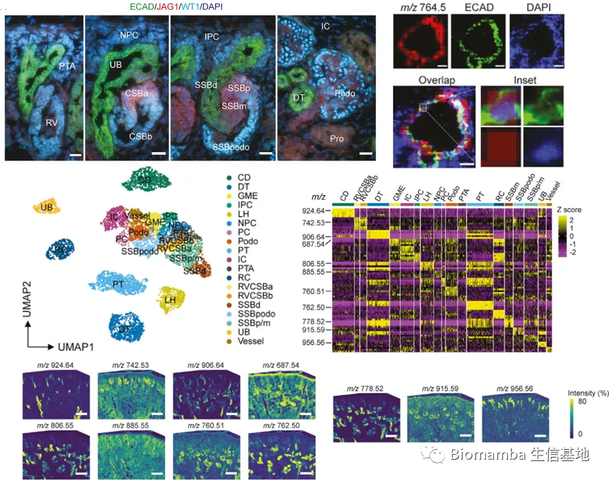
由于MALDI-MSI的结果显示了各细胞类型的特征基本为脂质，作者随后对16周的胎儿肾脏组织进行了空间脂质组学检测，发现分化的不同结局（PT、DT、CD）具有较为不同的脂质特征。在结束了空间脂质组学检测工作后，作者对使用的组织切片进行了免疫荧光染色，并根据基于空间脂质组数据的分型信息标记了细胞的空间分布 ，还使用了17、18、19周的胎儿肾脏样本进行佐证。这些信息共同证明，不同种类的人类胎儿肾脏细胞具有脂质分子的异质性 。
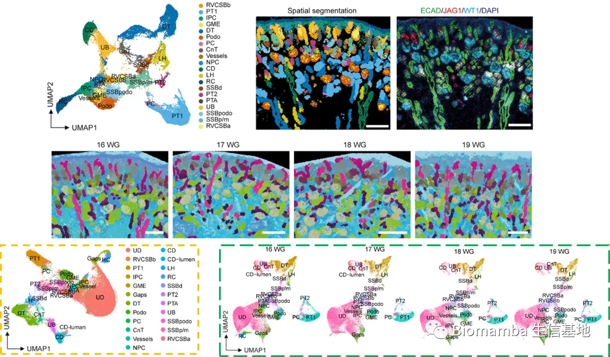
基于空间脂质组的人类胎儿肾细胞发育轨迹
鉴于单细胞转录组数据难以从HSB、CLS等相关细胞中区分杯状细胞，为发现杯状细胞的分子特征，作者基于空间脂质组学数据进行了拟时序分析。在三维的拟时序图像中，能够清晰地发现从肾始祖细胞出发的三条发育轨迹 ，并能够在组织切片的层面上得到证明。并基于该数据集，发现可能与三条分化轨迹相关的脂质分子。
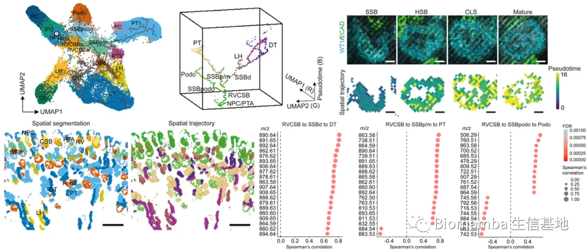
此外，作者还检测了肾脏成纤维细胞瘤样本的空间脂质组信息，发现肿瘤细胞的UMAP坐标与RVCSB/SSB等分化程度较低的细胞接近，而发育轨迹上却出现不同。这一现象通过脂质的空间分布与H&E染色进行了确认。由此，作者证明胎儿肾细胞的发育具有脂质的空间特征。
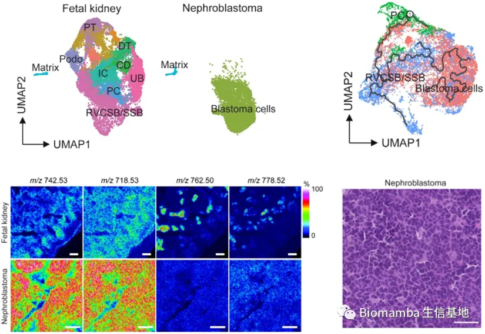
肾细胞发育过程中糖代谢功能的变化
上述结果从代谢层面上证明了肾脏发育过程中具有不同的分子特征。而从代谢相关的基因集 合出发，从NPC到PTA/RVCSB 的发育过程中，TCA循环/电子转移组分（ETC）、氨基酸和核苷酸代谢等代谢功能正相关，但与甘油磷脂合成、磷脂代谢负相关。附图的结果显示了糖酵解是这一阶段的主要能量来源 。
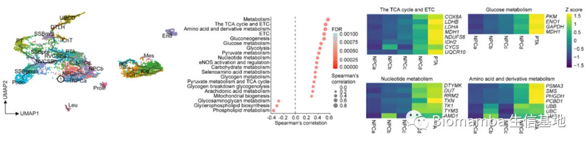
而从RVCSB到PT 的发育轨迹中，糖酵解的强度下降（关键酶丙酮酸激酶PKM下降），TCA和ETC、糖异生、线粒体脂肪酸氧化酶相关通路的强度随发育而增强。作者随后采用了同位素标记考察了葡萄糖、乙酸、乳酸、亚麻酸等可能影响TCA循环的碳源物质，发现亚麻酸对于TCA关键代谢物柠檬酸与谷氨酸的贡献最大，说明脂质代谢可能是这一阶段的能量来源 。
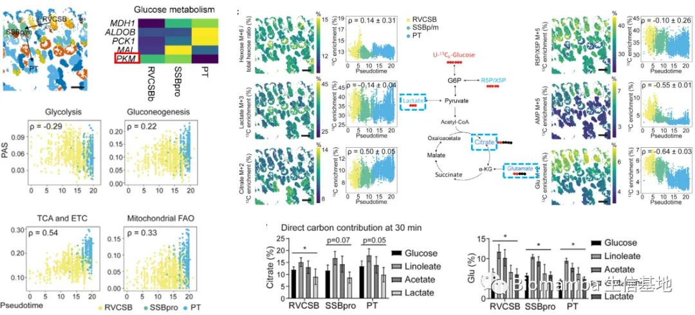
肾脏类器官发育过程的代谢特征
除了使用人类胎儿样本之外，作者还使用了两种hiPSC细胞系培养的类器官。首先，单细胞转录组结果证明了类器官与胎儿肾脏的发育都可以具有发育到PT的能力，并且确定具有早期和晚期 两种细胞亚型。
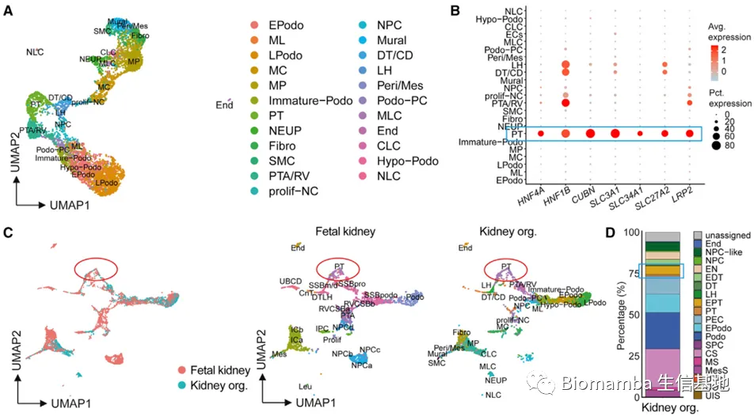
然后，作者对两种类器官进行了空间脂质组检测，在脂质分子的层面上证明了两种类器官确实具有分化为PT细胞的能力，并表现出与之类似的代谢特征。但前述结果中发现的PT细胞特征脂质分子却无法在类器官中全部发现。
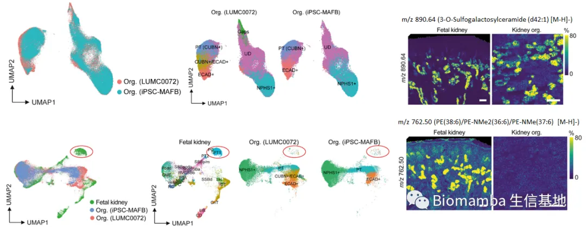
在单细胞转录组的特征基因中，作者发现脂质代谢相关基因里面，负责长链脂肪酸转运的关键基因CPT1A等在类器官中没有表达，而短链脂肪酸的代谢基因LTL具有较高的表达水平。这表明在类器官的发育中，短链脂肪酸可能对PT的分化具有重要作用。同位素实验则证明丁酸和乙酸对于类器官分化过程中TCA/ETC代谢具有很强的贡献。最后作者使用丁酸和乙酸分别干预类器官，发现丁酸确实可以促进PT细胞的分化 ，并上调了其标记基因的表达。
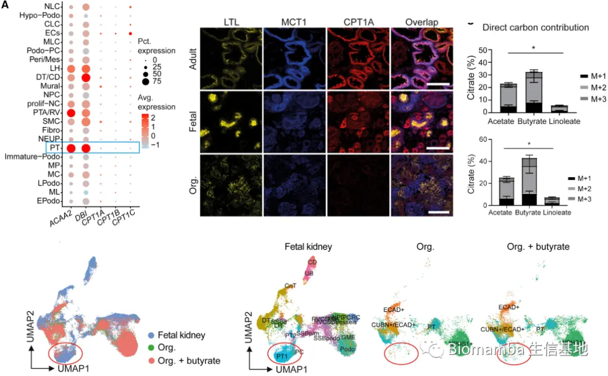
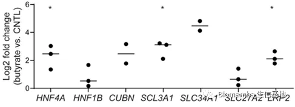
总结
-
肾脏上皮细胞的分化具有代谢层面的轨迹
-
随着近端小管的分化，能量代谢的类型逐渐从糖酵解向脂肪酸代谢转移
-
肾脏类器官具有不成熟的代谢表型
-
丁酸能够加强肾脏类器官近端小管的分化程度
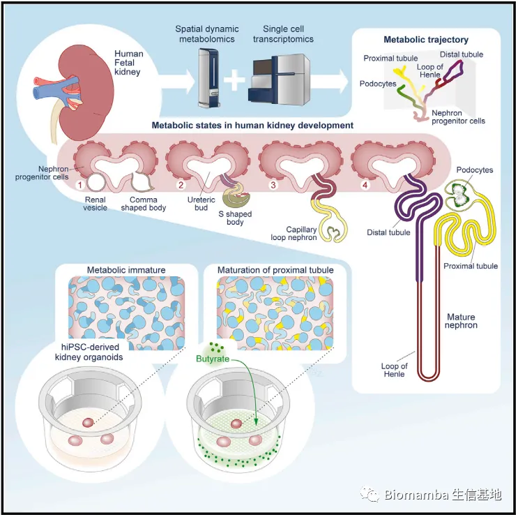
一些思考
本文使用了亚细胞层面 （肾细胞的直径大约为 10 μm）的空间代谢组 + 单细胞转录组 的手段，证明了人类肾脏分化过程具有独特的代谢特征。本文最大的亮点在于使用了分辨率极高 的空间代谢组，并很好的结合了单细胞转录组、免疫荧光的数据，同时考虑周密，证明了类器官分化与正常组织分化的异同。本文采用的MAIDI-MSI平台 实现了实验后切片的免疫荧光，突破了普通的空间代谢组的组织染色与代谢组检测不能使用同一张切片的限制，避免了连续切片导致的组织形变 。但这种结合仍需要很好的空间信息对应，目前只能通过图像对齐实现。同时，本文采用的空间代谢组检测也没能突破空间代谢组的另一不足，即代谢物注释的不准确性 ，这导致本文的代谢组注释中部分质核比仍对应到多种物质。本文对代谢组数据的分析使用了Seurat（DimPlot、UMAP等），没有仔细考虑代谢组数据的分布，这也是本文的一点瑕疵。 另外，本文的研究对象是肾脏发育和分化过程，这一过程收外界的影响较小，一定程度上保障了基因表达与代谢特征的严格对应。而如果将研究对象转为肿瘤等受外源性物质影响较大或不具有典型空间聚集特征的样本，可能就不会得到非常符合预期的结果。
参考文献
Wang G, Heijs B, Kostidis S, Rietjens RGJ, Koning M, Yuan L, Tiemeier GL, Mahfouz A, Dumas SJ, Giera M, Kers J, Chuva de Sousa Lopes SM, van den Berg CW, van den Berg BM, Rabelink TJ. Spatial dynamic metabolomics identifies metabolic cell fate trajectories in human kidney differentiation. Cell Stem Cell. 2022 Nov 3;29(11):1580-1593.e7. doi: 10.1016/j.stem.2022.10.008. PMID: 36332571.
Alexandrov T. Spatial Metabolomics and Imaging Mass Spectrometry in the Age of Artificial Intelligence. Annu Rev Biomed Data Sci. 2020 Jul;3:61-87. doi: 10.1146/annurev-biodatasci-011420-031537. Epub 2020 Apr 13. PMID: 34056560; PMCID: PMC7610844.
Wang G, Heijs B, Kostidis S, Mahfouz A, Rietjens RGJ, Bijkerk R, Koudijs A, van der Pluijm LAK, van den Berg CW, Dumas SJ, Carmeliet P, Giera M, van den Berg BM, Rabelink TJ. Analyzing cell-type-specific dynamics of metabolism in kidney repair. Nat Metab. 2022 Sep;4(9):1109-1118. doi: 10.1038/s42255-022-00615-8. Epub 2022 Aug 25. PMID: 36008550; PMCID: PMC9499864.
Gangqi Wang, Bram Heijs, Sarantos Kostidis et al. Analyzing cell type-specific dynamics of metabolism on kidney, 11 October 2022, PROTOCOL (Version 1) available at Protocol Exchange [https://doi.org/10.21203/rs.3.pex-1912/v1]

如何联系我们
 公众号后台消息更新不及时，超过48h便不允许回复读者消息，这里给大家留一下领取资料、免费服务器的微信号 ，方便各位随时交流、提建议（由助理接待）。此外呼声一直很高的交流群 也建好了，欢迎大家入群讨论：永久免费的千人生信、科研交流群
公众号后台消息更新不及时，超过48h便不允许回复读者消息，这里给大家留一下领取资料、免费服务器的微信号 ，方便各位随时交流、提建议（由助理接待）。此外呼声一直很高的交流群 也建好了，欢迎大家入群讨论：永久免费的千人生信、科研交流群
大家可以阅读完这几篇之后添加给生信入门初学者的小贴士 如何搜索公众号过往发布内容

 您点的每个赞和在看，我都认真当成了喜欢
您点的每个赞和在看，我都认真当成了喜欢